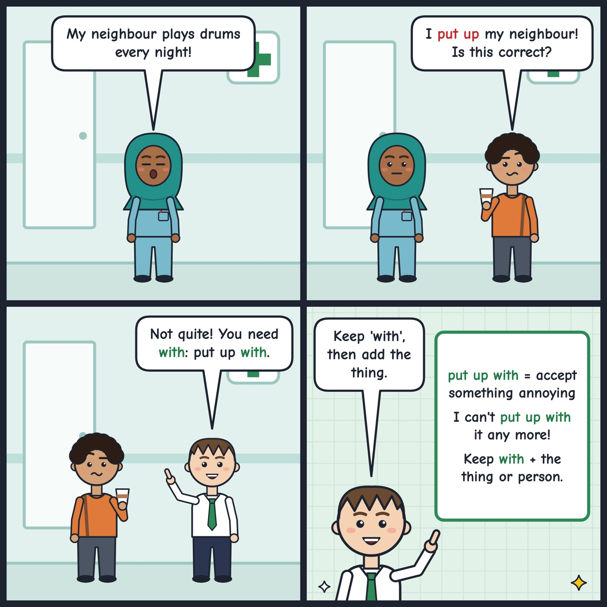

put up with
To accept something annoying without complaining or leaving.
I can't put up with the noise from the road any more.
'Put up with' means to accept something annoying. Always keep 'with' and add the thing or person after it.

Your turn
What is one thing you can't put up with?
What is one thing you can't put up with?